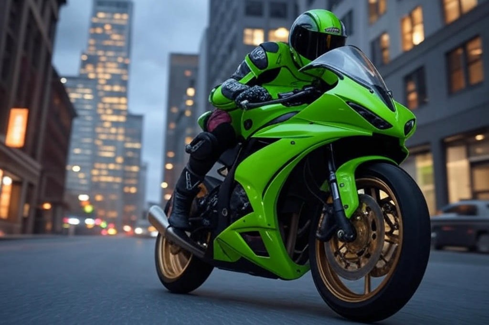

Traffic Rider: Download Now for Unlimited Money and an Unstoppable Gaming Experience
If you love high-speed motorcycle racing games, then Traffic Rider is your ultimate ticket to endless excitement. This game takes the thrill of racing to a whole new level, offering stunning graphics, realistic bike physics, and an open-world environment that keeps you hooked for hours. The best part? You can now download the latest version of Traffic Rider Mod APK with unlimited money, unlocking all bikes, upgrades, and customization options without any restrictions.
Why Traffic Rider Stands Out Among Racing Games
Unlike other racing games that limit your progress with paywalls and grinding, Traffic Rider gives you the freedom to enjoy everything from the start. With unlimited money, you can buy the fastest bikes, upgrade them to their maximum potential, and dominate every race without worrying about in-game currency. The game's first-person perspective makes the experience even more immersive, putting you right in the rider's seat as you weave through traffic at breakneck speeds.
The attention to detail in Traffic Rider is impressive. From the sound of the engines to the changing weather conditions, every element adds to the realism. Whether you're racing against time in career mode or just cruising freely in endless mode, the game never gets boring. And with unlimited money, you can experiment with different bikes and upgrades to find the perfect ride for your style.
Unlimited Money – The Key to Unlimited Fun
Let's be honest – grinding for in-game cash can be frustrating. You just want to ride the best bikes and enjoy the game without limitations. That's where the modified version of Traffic Rider comes in. With unlimited money, you can instantly unlock all premium bikes, including the powerful Hayabusa and Ninja H2R. No more waiting or watching ads—just pure, uninterrupted racing action.
Upgrading your bike becomes a breeze when money is no object. You can max out speed, acceleration, and braking in seconds, turning your motorcycle into an unstoppable beast. Customization options also open up, allowing you to tweak your ride's appearance to stand out on the road. Want a neon-green sports bike with gold rims? Go for it! The game becomes a playground where your creativity and need for speed collide.
Smooth Gameplay and Stunning Graphics
One of the biggest strengths of Traffic Rider is its smooth, lag-free gameplay. Even on mid-range smartphones, the game runs flawlessly, delivering crisp visuals and responsive controls. The day-night cycle and dynamic weather effects add depth to the races, making each session feel unique. One moment you're speeding under a bright sun, and the next, you're navigating wet roads under heavy rain—all while dodging traffic like a pro.
The AI-controlled traffic behaves realistically, forcing you to stay alert at all times. Overtaking cars and trucks requires precision, and one wrong move can send you skidding off the road. But with unlimited money, you can afford the best upgrades to make your bike more stable and easier to control, reducing those frustrating wipeouts.
Multiple Game Modes for Endless Entertainment
Traffic Rider doesn't just throw you into random races—it offers multiple game modes to keep things fresh. Career mode challenges you to complete various missions, from time trials to overtaking a set number of vehicles. Each completed mission rewards you with cash (not that you need it with unlimited money, but it's still satisfying).
Endless mode is perfect for players who just want to ride without any pressure. Here, you can explore the open roads, test your bike's limits, and enjoy the scenery. The sense of freedom is unmatched, especially when you're riding a fully upgraded superbike that responds to your every command.
Easy to Download and Install
Getting Traffic Rider with unlimited money is simple. Just download the latest APK file from a trusted source, enable installation from unknown sources, and follow the setup instructions. Within minutes, you'll be ready to hit the road with all the game's premium features unlocked. No complicated hacks or risky modifications—just a straightforward way to enhance your gaming experience.
Final Thoughts – Why You Should Download Traffic Rider Today
If you're tired of racing games that hold you back with endless grinding and microtransactions, Traffic Rider with unlimited money is the perfect solution. It removes all barriers, letting you enjoy the game exactly how you want. The combination of realistic physics, breathtaking visuals, and unrestricted access to all content makes this one of the best motorcycle racing games available.
So why wait? Download Traffic Rider now, unlock unlimited money, and experience the ultimate racing adventure. Whether you're a casual player or a speed demon, this game has something for everyone. Get ready to rev your engines, leave your rivals in the dust, and become the ultimate Traffic Rider!